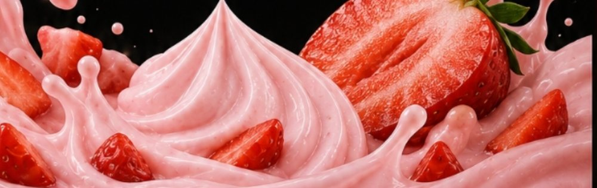
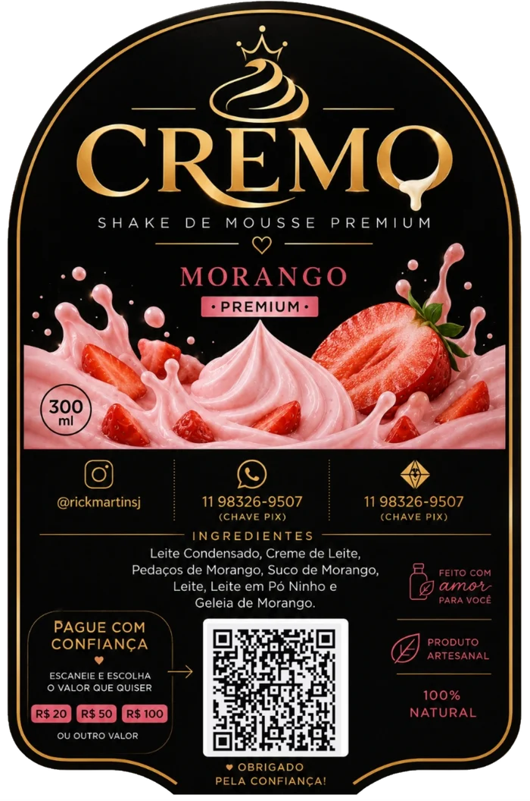
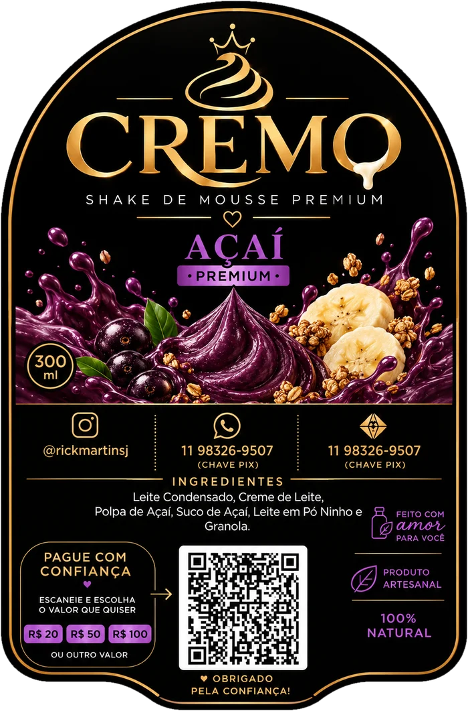
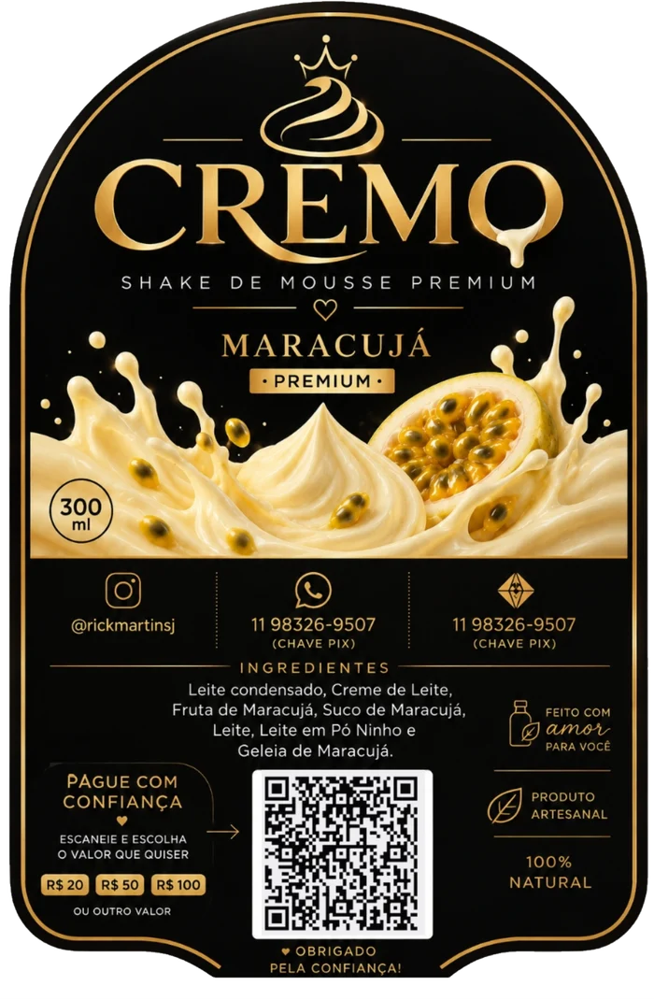
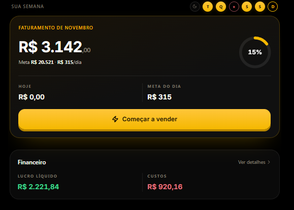
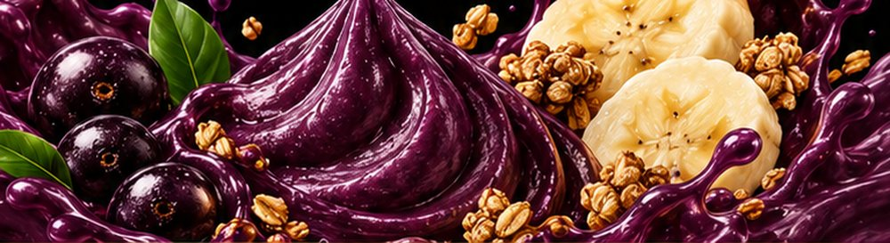

SABOR 01
MORANGO
Cremoso, saboroso e com uma combinação deliciosa de mousse e geleia de morango.
Agora vou te ensinar a fazer as 3 receitas que uso na minha própria marca: as batidas cremosas de morango, maracujá e açaí, com videoaulas práticas, mesmo começando do zero.
Para consumir em casa ou dar o primeiro passo para vender por conta própria.
Resultado pessoal de vendas. Seus resultados podem variar e não há garantia de faturamento ou lucro.




Números do meu app de vendas. Resultado pessoal, que depende dos dias trabalhados, custos, clientes e vendas.
Você não precisa necessariamente começar com uma loja, funcionários ou uma grande estrutura.
Às vezes, o primeiro passo é encontrar um produto que as pessoas tenham vontade de comprar.
Foi assim que comecei a desenvolver minha marca de batidas, a Cremo. Peguei três sabores, transformei em produtos e comecei a vendê-los nas ruas.
Em apenas quatro dias de trabalho, registrei R$ 3.142 em faturamento.
E agora você pode aprender a preparar essas mesmas receitas.

Cremoso, saboroso e com uma combinação deliciosa de mousse e geleia de morango.
Uma receita que combina cremosidade com o sabor marcante e levemente ácido do maracujá.

Uma maneira diferente e deliciosa de preparar uma batida cremosa com açaí.
Você aprende os três sabores em um único método.
Você pode estudar diferentes formas de comercializar o produto, de acordo com a realidade da sua cidade.
Levando as bebidas prontas para oferecer aos clientes.
Divulgando para amigos, conhecidos e clientes pelo WhatsApp e Instagram.
Estruturando uma operação para vender por aplicativos como o iFood, desde que atenda aos requisitos da plataforma e às normas sanitárias.
O mais importante é que, antes de pensar em vender, você aprenda a preparar um bom produto. E é exatamente por aí que o Método Cremo começa.
Nada de receber somente um PDF e ter que adivinhar como preparar. O Método Cremo traz videoaulas demonstrando o preparo das três receitas.
O preparo da batida de morango.
O preparo da batida de maracujá.
O preparo da batida de açaí.
Receitas de uma marca de verdade, ensinadas por quem prepara e vende o produto.
Minha experiência não vem só de assistir a vídeos sobre empreendedorismo.
Eu vou para a rua, ofereço meus produtos, converso com clientes e acompanho meus resultados de vendas.
Criei uma marca de batidas e agora quero compartilhar as receitas que fazem parte dela.
Você não precisa ter a mesma história que eu. Mas pode começar aprendendo o que eu aprendi a preparar.
@RICKMARTINSJVocê poderia tentar descobrir sozinho quais ingredientes usar, testar várias combinações e gastar tempo até encontrar uma receita que goste. Ou pode acompanhar o preparo das três batidas da Cremo, passo a passo, em vídeo.
Não. As videoaulas são pensadas para acompanhar o preparo, inclusive para iniciantes.
Sim. Você pode aprender as receitas e utilizá-las como ponto de partida para produzir bebidas destinadas à venda, respeitando as normas aplicáveis.
O Método Cremo ensina a preparar as três receitas. A abertura de uma operação no iFood, precificação, taxas e exigências do delivery são etapas adicionais.
Não existe essa garantia. Meus resultados dependem da minha operação, dos dias trabalhados, custos, clientes e vendas. Compartilho minha experiência para mostrar o que fiz, não para prometer resultados iguais.
Apenas R$ 19,90 pelo conteúdo das três receitas.
Você já viu o que eu consegui construir vendendo as minhas. Agora pode aprender o preparo dos três sabores e descobrir o que consegue fazer com esse conhecimento.
COMECE PELO PRODUTO. APRENDA AS RECEITAS. QUERO MEU MÉTODO CREMO POR R$ 19,90